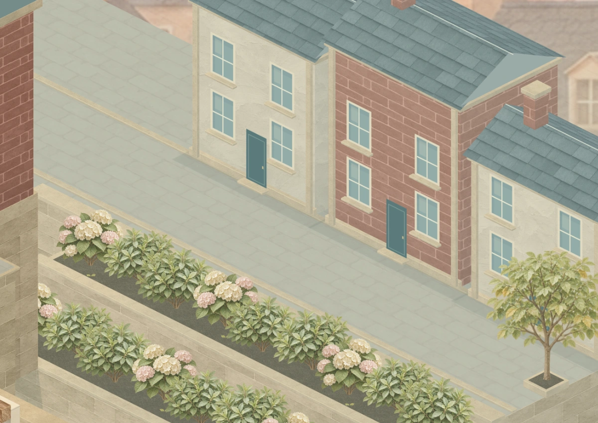
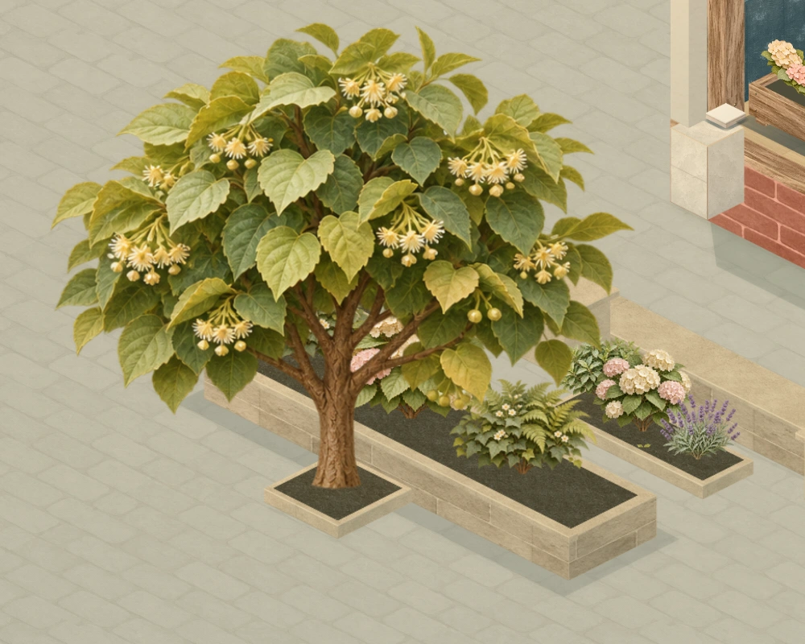
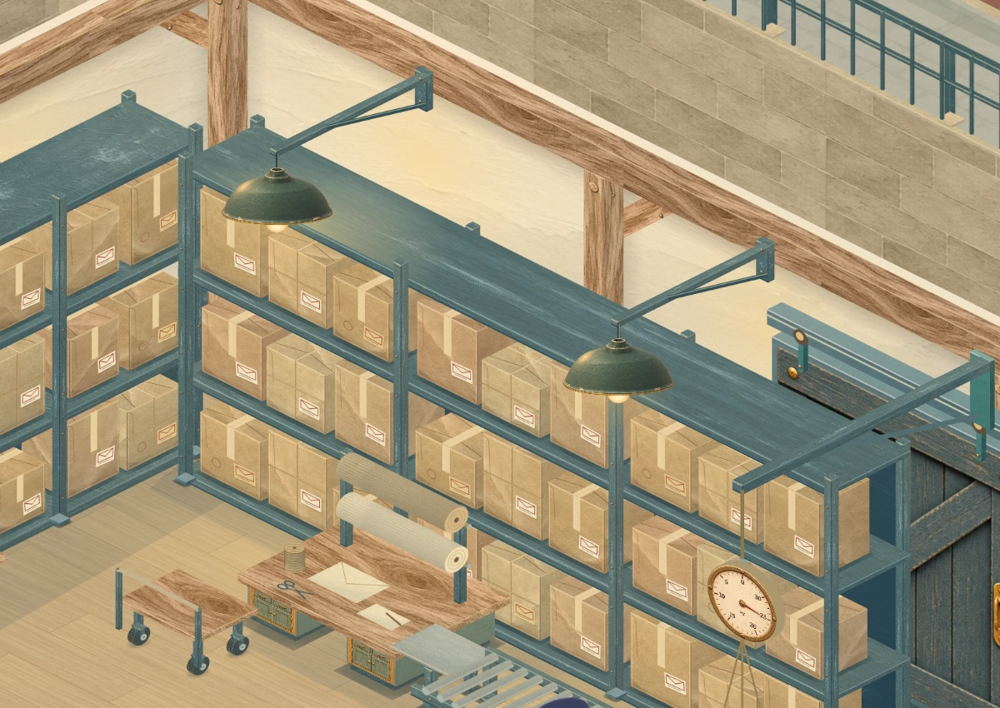
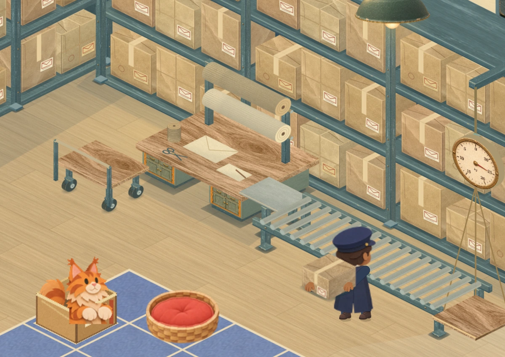
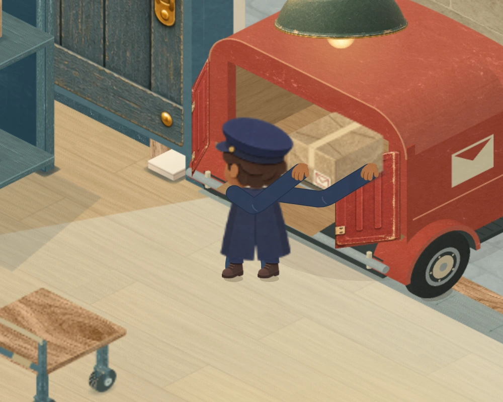
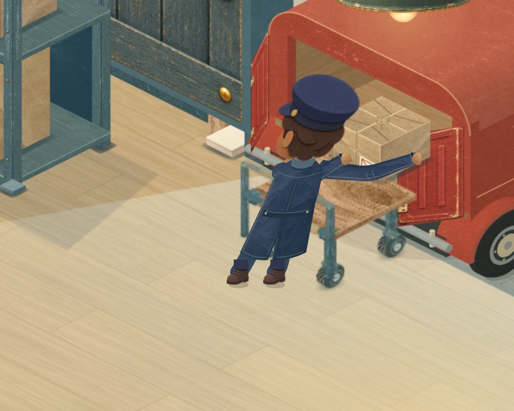
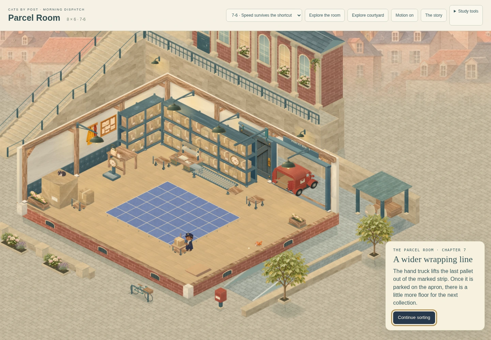
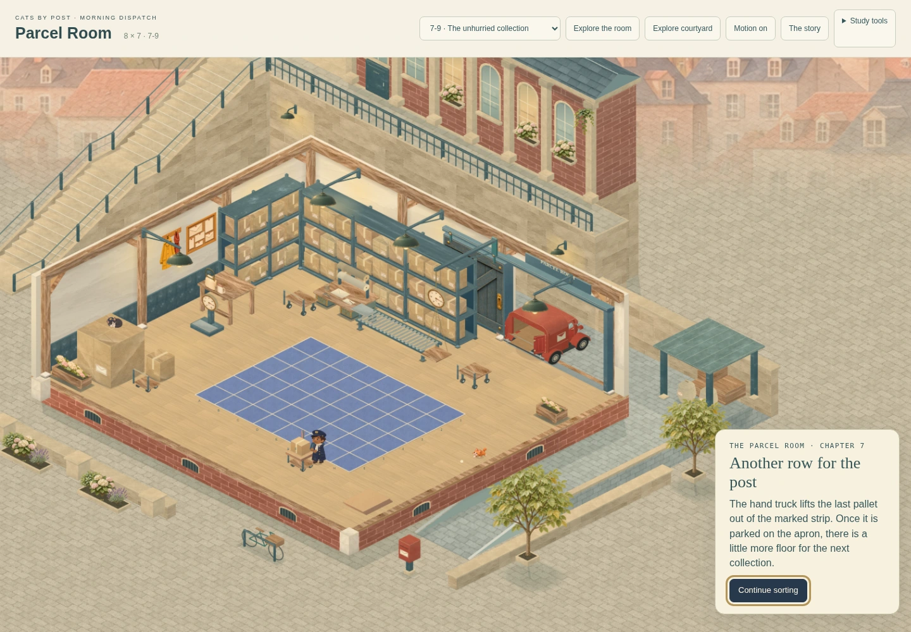
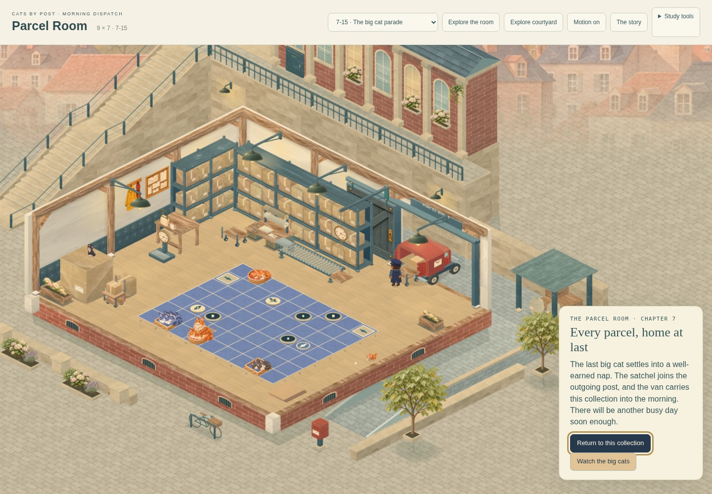

CATS BY POST · MORNING DISPATCH · LIGHT, TOWN & POSTAL LIFE
Morning light through the whole scene
Quieter paving, layered foreground planting and a terraced upper street connect the working room to the distant town. Warm lamps and cooler daylight fall on the actual surfaces. These are captures from the playable renderer.
The van’s route and clock are unchanged. Its loading floor, cargo, rear opening, door leaves and ramp retain their native coordinates. Normal play framing, all fifteen deliveries and chapter presentations are preserved.
From open paving to a connected town
 Corrected scene at the same courtyard camera and frame 600: softer stonework, planted foreground depth and a connected upper street.
Corrected scene at the same courtyard camera and frame 600: softer stonework, planted foreground depth and a connected upper street.
Light, materials and contact

The upper street shares the civic terrace’s height. Retaining walls and planted steps carry it down to the service court.
Fuller paper foliage frames the near edge; its footings meet the street. The planting stays outside every board.
Warm pendants remain local to the shelves and benches, against cooler morning daylight.
Trolley forks now meet the wheel bearings and stems. Soft floor contact helps the deck’s working height read.The whole room stays readable
 Maximum delivery 7-15, normal play camera. The board retains its previous size and centre.
Maximum delivery 7-15, normal play camera. The board retains its previous size and centre.
The postal loop, close up
The worker now has bent elbows, a weight shift from grounded feet and continuous cloth sleeves. Hands retain the original parcel and trolley contacts. Step through actual native frames below; the playable study keeps the continuous original clock.
 Frame 600 · unloading and sorting.
Frame 600 · unloading and sorting.
Unloading at frame 200. Wrapping at frame 948.
Wrapping at frame 948. Dispatch trolley at frame 1920.
Dispatch trolley at frame 1920.
Outgoing transfer at frame 2160.Chapters and smaller screens

The first growth retains the worker, truck and reveal timing.
The second growth stays in the same room and court. The final expansion prepares the maximum board.
The final expansion prepares the maximum board.
The final chapter retains the completed board and sends the outgoing post once. Portrait phone: all 63 cells remain visible and pickable.
Portrait phone: all 63 cells remain visible and pickable. Landscape phone: running and result preserve the reserved board space.
Landscape phone: running and result preserve the reserved board space.